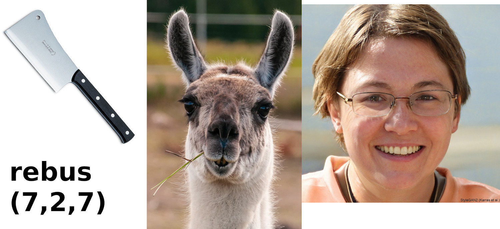

Rebus (7, 2, 7)
Miglior rebus - Solution mannaia la madonna
Mannaia la madonna: Guida a Questo Nuovo Fenomeno
Cos'è Mannaia la madonna?

Il termine "Mannaia la madonna" è una nuova parola che sta rapidamente guadagnando popolarità. Ma cosa significa esattamente Mannaia la madonna? La definizione di Mannaia la madonna può variare a seconda del contesto, ma in generale, si riferisce a un concetto innovativo che sta rivoluzionando diversi settori.
L'Origine del Mannaia la madonna
Il Mannaia la madonna è nato come un'idea rivoluzionaria in un contesto creativo. La parola è stata inventata per descrivere una nuova tendenza che combina tecnologia, creatività e innovazione. L'origine del Mannaia la madonna risale a un brainstorming tra esperti di vari settori che cercavano un termine unico per rappresentare questa fusione.Perché il Mannaia la madonna è Importante?
Il Mannaia la madonna rappresenta una svolta significativa per diversi motivi: Innovazione: Il Mannaia la madonna introduce nuove modalità di pensiero e soluzioni innovative. Versatilità: Può essere applicato in vari campi, dalla tecnologia al design, all'arte e oltre. Attrattività: Essendo un concetto nuovo e intrigante, attira l'attenzione e stimola la curiosità.Applicazioni del Mannaia la madonna
Il Mannaia la madonna può essere implementato in diversi settori. Ad esempio: Tecnologia: Nel campo della tecnologia, il Mannaia la madonna può rappresentare un nuovo approccio alla risoluzione dei problemi. Design: In ambito design, il Mannaia la madonna può portare a creazioni uniche e innovative. Marketing: Utilizzare il concetto di Mannaia la madonna nelle campagne di marketing può creare un vantaggio competitivo e distinguersi sul mercato.Come Utilizzare il Mannaia la madonna
Se sei interessato a utilizzare il concetto di Mannaia la madonna nel tuo lavoro, ecco alcuni suggerimenti: Sperimenta: Non avere paura di provare nuove idee e approcci. Collabora: Lavora con esperti di diversi settori per sviluppare il tuo Mannaia la madonna. Innova: Cerca sempre di pensare fuori dagli schemi e di portare qualcosa di nuovo.Conclusione
Il Mannaia la madonna è molto più di una semplice parola; è un concetto che può trasformare il modo in cui pensiamo e lavoriamo. Sia che tu sia un tecnologo, un designer o un marketer, il Mannaia la madonna offre infinite possibilità. Non perdere l'occasione di esplorare e implementare il Mannaia la madonna nel tuo campo! Foto di Nina Garman da PixabayCredits
Videogame molto avanzati (TM)
notizieIncredibili.net